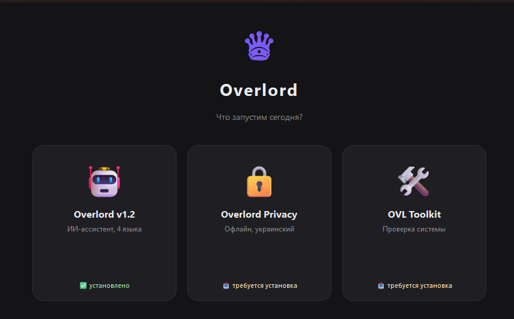
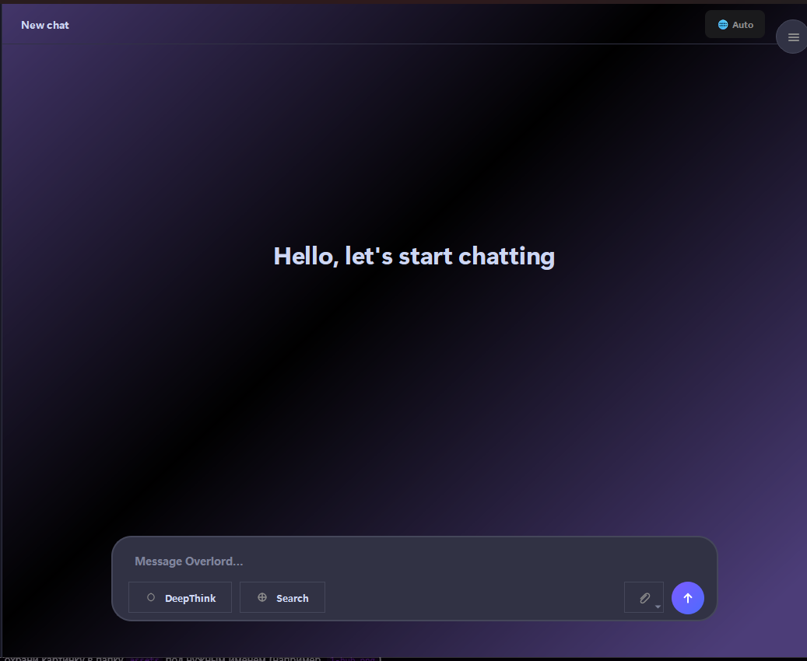
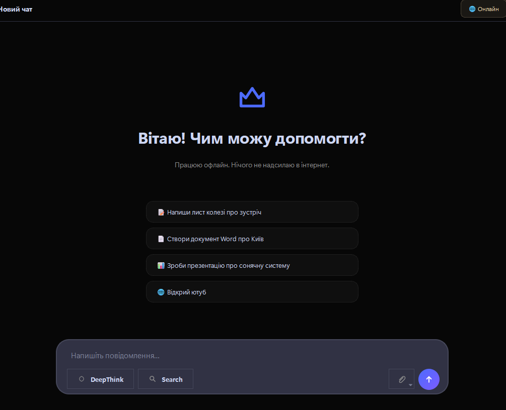
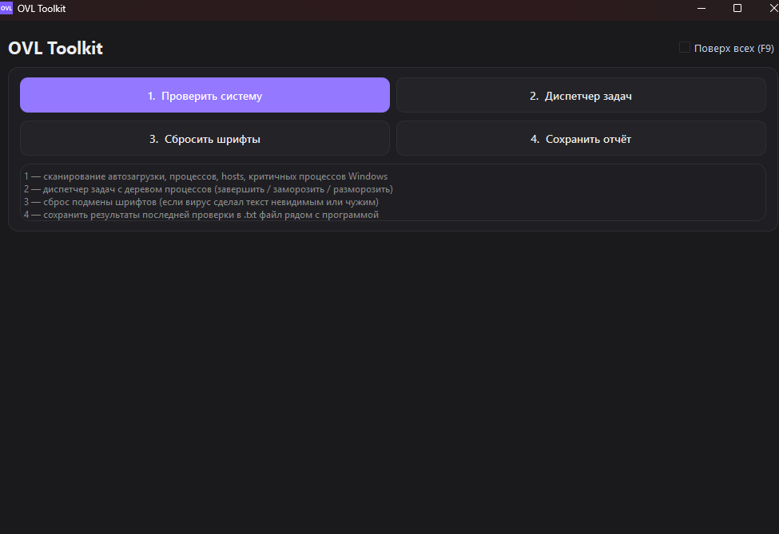
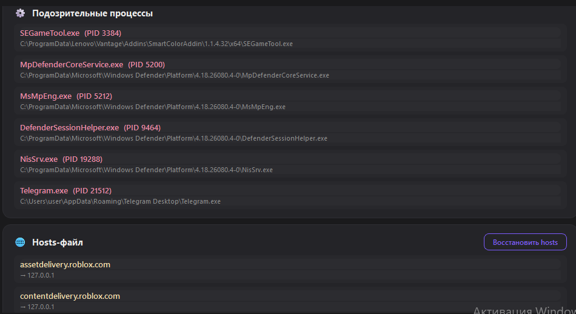
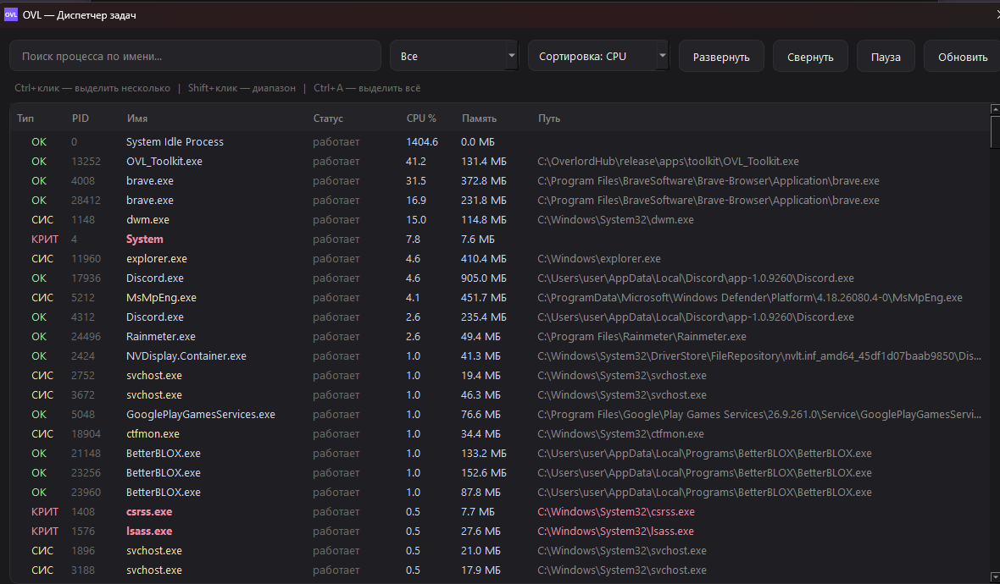

Overlord v1.2
Полноценный ИИ-ассистент
- 4 языка: RU / UK / EN / DE
- Работа с Word и PPTX
- Cloud Vision — распознавание изображений
- DeepThink — режим глубоких рассуждений
~350 МБ
Скачать ZIP ↗
Overlord — это набор из трёх программ для Windows: умный ИИ-ассистент, полностью офлайн-версия для приватной работы и системный Toolkit для диагностики компьютера. Всё ставится одним установщиком и работает локально — ваши данные не уходят в облако.
Windows 10 / 11 · ~38 МБ · бесплатно
Ставятся вместе через Overlord Hub — лаунчер сам скачает нужное и подтянет модели.
Полноценный ИИ-ассистент
Офлайн и приватно
Диагностика системы
Тёмная тема, акцент #7c5cff, шрифт Segoe UI.






Ничего настраивать вручную не нужно — хаб всё сделает сам.
Нажмите кнопку «Скачать Overlord» вверху страницы — файл OverlordSetup.exe (~38 МБ).
Windows покажет синее окно «Защитник Windows». Нажмите «Подробнее» → «Выполнить в любом случае».
Программа поставится в C:\Overlord\, а на рабочем столе появится ярлык Overlord.
Хаб сам проверит Ollama, скачает нужную программу и модели. Первая загрузка моделей требует интернета.
Нет, это ложное срабатывание. Все программы собраны через PyInstaller, а антивирусы часто помечают такие сборки ML-детектом.
Проверка на VirusTotal даёт 1 из 69 срабатываний. Malwarebytes, Kaspersky, ESET, Bitdefender и Avast — чисто.
Что делать: нажмите «Подробнее» → «Выполнить в любом случае». Либо добавьте папку C:\Overlord\ в исключения.
Ollama — бесплатная программа, которая запускает языковые модели прямо на вашем компьютере. Именно она «думает» за Overlord.
Хаб находит Ollama автоматически. Если её нет — предложит скачать и установить. После этого он сам загрузит нужные модели командой ollama pull.
Плюс: всё работает локально, ваши тексты никуда не отправляются.
Для слабых ноутбуков есть отдельная версия — Overlord Privacy: она легче и работает полностью офлайн.
Никуда. Overlord работает на вашем компьютере. Обработка текста и документов идёт локально через Ollama.
Исключение — функция Cloud Vision (распознавание изображений) в версии v1.2: она по желанию отправляет картинку в облако. Если приватность важнее — используйте Overlord Privacy.
Нет. Проект бесплатный и открытый — исходники лежат на GitHub. Платить нужно только за электричество 🙂
Через «Параметры → Приложения → Overlord → Удалить». Отдельную программу из хаба можно убрать так:
Remove-Item -Recurse -Force "C:\OverlordHub\apps\privacy" -ErrorAction SilentlyContinue